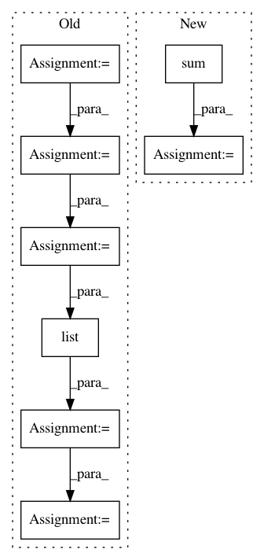

26949ac70fc9cff80e633b0476c306d7809c8263,qiskit/aqua/components/uncertainty_models/multivariate_variational_distribution.py,MultivariateVariationalDistribution,__init__,#MultivariateVariationalDistribution#Any#Any#Any#Any#Any#Any#,81
Before Change
self._var_form = var_form
self.params = params
self._initial_distribution = initial_distribution
q_ = QuantumRegister(num_qubits)
c_ = ClassicalRegister(num_qubits)
qc_ = QuantumCircuit(q_, c_)
if not self._initial_distribution is None:
self._initial_distribution.build(qc_, q_)
qc_.extend(self._var_form.construct_circuit(self.params, q_))
qc_.measure(q_,c_)
quantum_instance = QuantumInstance(backend=BasicAer.get_backend("statevector_simulator"))
result = quantum_instance.execute(qc_)
result = result.get_statevector(qc_)
values = np.multiply(result, np.conj(result))
values = list(values.real)
probabilities = values
super().__init__(num_qubits, probabilities, low, high)
self._var_form = var_form
self.params = params
self._initial_distribution = initial_distribution
After Change
self._var_form = var_form
self.params = params
self._initial_distribution = initial_distribution
probabilities = np.zeros(2 ** sum(num_qubits))
super().__init__(num_qubits, probabilities, low, high)
self._var_form = var_form
self.params = params
self._initial_distribution = initial_distribution
In pattern: SUPERPATTERN
Frequency: 3
Non-data size: 8
Instances
Project Name: Qiskit/qiskit-aqua
Commit Name: 26949ac70fc9cff80e633b0476c306d7809c8263
Time: 2019-04-30
Author: ouf@zurich.ibm.com
File Name: qiskit/aqua/components/uncertainty_models/multivariate_variational_distribution.py
Class Name: MultivariateVariationalDistribution
Method Name: __init__
Project Name: dask/dask-image
Commit Name: cbbcea8795e8da754a5b3ffb1a08ef66afd84eef
Time: 2018-09-02
Author: jakirkham@gmail.com
File Name: dask_image/ndmeasure/_utils.py
Class Name:
Method Name: _ravel_shape_indices
Project Name: osmr/imgclsmob
Commit Name: 981e912036e667a0d0e100a12001e3e8543620ea
Time: 2019-04-07
Author: osemery@gmail.com
File Name: pytorch/pytorchcv/models/sknet.py
Class Name: SKConvBlock
Method Name: forward